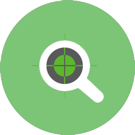

Skills
Research

Design Leader with diverse product experience focused on delivering high quality experiences and creating strategic impact.

UX Strategy

Interaction Design & Usability Evaluation

Design Research & Interaction Design

Research & Design

Interaction Design

Design
Partner in all phases of the analytics product development lifecycle with product management and engineering stakeholders. Hands-on design work and mentoring other designers in the end-to-end UX process with personas, journey maps, wireframes, design patterns, mockups, and prototypes.
Lead design efforts for Next Generation of Mortgage Enterprise Application with cross functional teams creating engaging and efficient experiences.
Lead design & research efforts with multi disciplinary and international teams to deliver compelling user experiences for Industrial Internet Applications across web, tablet and mobile for several GE businesses.
Lead designer for several projects at Western Digital Branded Products Group UX team.
Translated concepts and wireframes into production quality interactive prototype for touch screen based tablet device targeted at education market.
Design, User Research and Usability testing of IBM Enterprise Mashup Product.
Benchmark software development and Application Performance Study on Intel processor performance.
Studied Web usability, Mobile design, Psychology, HCI and Design Studio methodologies.
Software Engineering with Java, Network Programming, Web Programming, Performance Evaluation
User Interface Conference-15 2010
Usability Week 2011
Lean UX Workshop 2012
Infographics and Data Visualization - 2013
Designing Advanced Mobile and Wearable User Experiences UCSC Extension Sep 2014
I am a Product Design Manager and Lead. I have several years of Enterprise Product Design at various companies including Workday,GE Digital, Western Digital, Kno Inc. and IBM. Before moving to a UX career I worked at Intel as a SW Engineer.
During my career as a software engineer/performance analyst at Intel I got exposure to UX with gaming and video quality performance assessment. I developed an interest for UX and pursued human factors degree. I am glad for making the transition and enjoy the creative work, working with users, collaboration with product owners and engineering.
In my spare time, I like to read and learn from everything. I love travel, hiking with family & friends. I am an active participant in book clubs and culinary groups. I like to relax with classical music or practice zumba & bollywood dance at the gym.